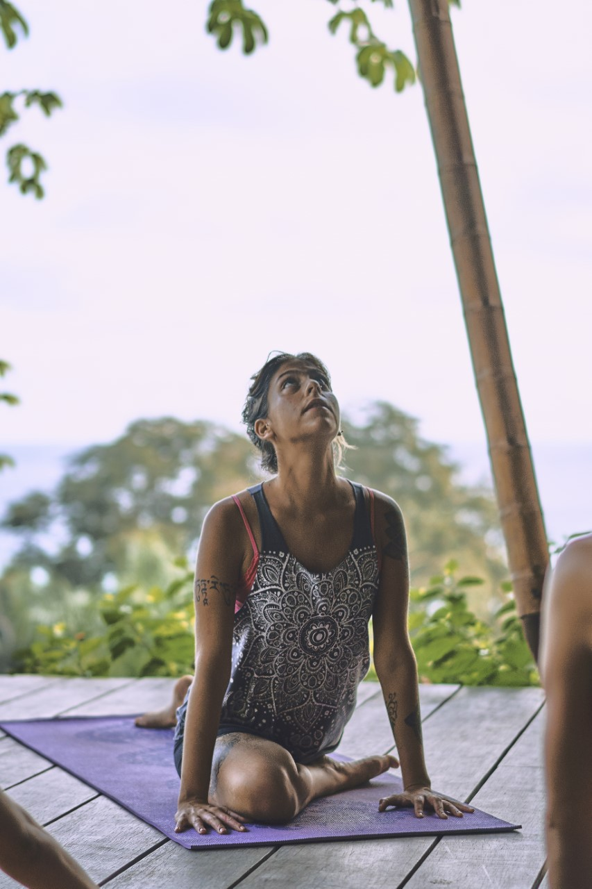

Yoga Consciente

Soy Euge Ramos, profe de Yoga ya hace 10 años. Me encanta trabajar con personas y ver sus progresos en la practica. Siempre me dediqué al cuidado del cuerpo de cada persona que viene a clases, buscando la correcta alineacion desde la disponibilidad de su cuerpo, ayudando a encontrar armonia en la practica En mis clases se mezclan diferentes estilos de Yoga como el Hatha Yoga, Dinamico Integral, Iyengar y otras tecnicas de consciencia corporal. Uno de mis principales objetivos es adaptar la practica para todo tipo de personas y edades.